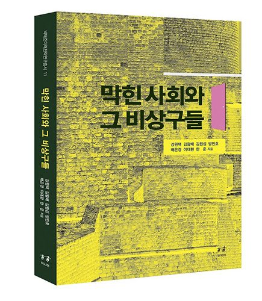

저자 강원택, 김왕배, 김원섭, 방민호, 배은경, 한준출판사 (주)아시아발간일 2019-04-02

책소개
『막힌 사회와 그 비상구들』의 기획 의도는 열리고 또 열려서 아주 활짝 ‘열린 사회’인 오늘의 한국사회 내부의 곳곳에 가로놓인 ‘벽’에다 소통의 ‘비상구’를 만들어보자는 데 맞춰져 있었다. ‘사회’란 말이 불거져 보이듯 이 책은 인간의 본질, 인간의 근원을 탐구하기보다는 사회적 문제들을 해소하여 더 인간다운 삶을 담보할 수 있는 사회로 나아가기 위한 ‘오늘의 한국사회 진단서’ 구실을 해보자는 것이었다. --- 「‘왜 ‘막힌 사회’와 ‘비상구’인가?’ 」 중에서
그렇다. 지금 이 물질주의적 현대를 구가하면서 동시에 시달리는 한국인들에게는 지금 어떤 ‘회심’이 필요한 것 같다. 이 종교적 어휘가 아니고는 우리가 처한 상황의 절박감을 다르게 표현하기 어려운 것도 같다. 그러나, ‘이 열정적인 세계의 메아리 없는 공허는 나를 두렵게 한다.’ 우리는 지금도 너무 물질적인 삶을, 육체적인 삶을 산다. 영혼으로부터, 사랑으로부터 먼 채. --- 「‘‘물질주의’에 관하여’ 」 중에서
한국에서 현재 문제가 되고 있는 불평등은 어떤 특성을 지니는가? 불평등 수준은 높아지는가 아니면 낮아지는가? 불평등한 지위는 개인의 노력에 의해 극복 가능한가 아니면 지속되는가? 이러한 질문들에 대해 이 글에서는 답하고자 한다. 그 과정에서 이 글은 한국의 계층적 불평등이 양극화되고 있는가라는 더 큰 질문에 대한 답을 찾고자 한다. --- 「‘한국사회의 계층 양극화’ 」 중에서
결론적으로 한국 복지제도의 가장 큰 특성은 복지이원주의이다. 복지이원주의는 권위주의적 발전주의 국가가 수행한 성장전략과 복지전략으로 형성되었다. 하지만 민주화 이후에도 복지이원주의의 극복은 이루어지지 않았다. 한국의 복지국가는 여전히 노동사회의 내부자와 외부자의 차별을 멈추지 않고 있다. 역설적으로 복지이원주의의 재생산은 복지확대를 주도한 한국의 사회동맹의 성격과 밀접한 연관이 있다. 한국의 사회동맹은 중도좌파 정당, 노동사회의 내부자, 엘리트 중심의 시민운동에 의해 구성되었다. 이들은 한국에서 사회보험 확대 중심의 복지국가 건설에 상당한 기여를 하였다. 하지만 동시에 이들은 복지이원주의 폐단이 본격화된 이후에도 이를 완화하기보다는 이를 유지하는 데 주력하였다. --- 「‘한국 노동사회의 갈등: 내부자-외부자의 복지정치’ 」 중에서
필자는 현대 한국사회의 세대문제를 다음과 같은 순서로 논의해 볼 것이다.
첫째는 기존의 다양한 세대논의를 통해 한국사회에서 세대란 무엇인가를 소개하고, 둘째는 각각의 세대가 어떠한 삶의 경험을 체험하고 있는지에 주목해 보고자 한다. 편의상 세대를 기성세대와 청년세대로 나누겠지만 필요에 따라 연령별 구분과 각각의 큰 범주 안에서 좀 더 세부적인 세대가 구분될 것이다. 이후 세대 간의 특성 차이와 갈등 내용을 파악하고 이를 해소할 방안이 무엇인지를 고민해볼 것이다. --- 「‘세대갈등과 인정 투쟁’ 」 중에서
한국사회의 젠더갈등 문제를 주로 청년세대를 중심으로 살펴보고자 한다. 오늘날의 2~30대 청년층은 대략 1990년대에 유년기와 소년기를 보낸 남녀로 구성되어 있는데, 이들이 태어나고 자라난 한국사회는 그 이전 세대가 경험한 고도성장과 압축적 근대화 시기와는 완전히 다른 구조적 변동을 겪고 있었다. 이는 이들이 경험한 젠더관계의 구조를 이전 세대와는 전혀 다른 것으로 만들었으며, 이것이 청년층의 악화된 노동시장 조건, 그리고 정보화사회에 태어난 ‘디지털 네이티브(digital natives)’라는 세대적 특징과 어우러져 젠더갈등의 다양한 양상을 구성하고 있다. 이 글은 이러한 사항들을 염두에 두고 최근 젠더갈등의 격화를 해석해 보고자 한다. --- 「‘한국사회의 젠더와 젠더갈등: 청년세대를 중심으로’ 」 중에서
이념갈등은 사실 어느 나라, 어느 시대에나 존재하는 것이다. 이념갈등은 사회가 나아가야 할 방향과 변화의 속도와 폭에 대한 상이한 대안을 제시해 줄 수 있고, 미래의 모습에 대한 건강한 토론을 이끌어 낼 수 있다. 이념적 차이가 분열과 대립으로 이어지지 않고 건강하고 긍정적인 역할을 할 수 있도록 하기 위한 정치제도의 개혁과 정치문화의 개선을 위한 우리 사회 전체의 노력이 중요하다.
--- 「‘더 나은 한국사회를 위한 분절 문제와 해소 방안: 이념갈등’ 」 중에서
총서 11권 구입하기: https://book.naver.com/bookdb/book_detail.nhn?bid=14520628
저자소개
방민호
1965년 충남 예산 출생. 1984년 서울대학교 국어국문학과 입학. 1994 [창작과 비평] 제1회 신인 평론상 수상, 비평 등단.
2000년 동 대학원 박사 졸업. 현재 서울대학교 국어국문학과 교수. 2006~현재 , [서정시학] 편집위원. 2012~현재, [문학의 오늘] 편집위원. 문학평론, 산문, 시잡, 소설집등 다수의 저서가 있다.
한준
현재 연세대학교 사회학과 교수
저역서로 [21세기 매니지먼트 이론의 뉴패러다임, 서울사회학, 4차 산업혁명. 일과 경영을 바꾸다]의 공저가 있다.
김원섭
고려대 사회학과 교수
저역서로 [독일의 사회보장제도, 네델란드의 사회보장제도, 한국사회의 반기업문화]의 공저가 있다.
김왕배
연세대학교 대학원 사회학 박사
연세대학교 사회학과 교수
학부와 대학원에서 사회학을 전공하고 현재 연세대학교 사회학과 교수로 재직 중이다. 연구 관심분야는 산업, 계층, 및 도시사회학 분야이며 현재 감정, 인권, 호혜경제 등을 연구 중이다. 최근 주요논문으로 "도덕감정: 부채의식과 죄책감의 연대"(2013), "트라우마의 치유과정에 대한 사회학적 탐색과 전망"(2014) 등이 있고 저서로 [도시, 공간 생활세계](2000), [산업사회의 노동과 계급의 재생산](2001) 등 외 다수의 공저가 있다.
배은경
서울대학교 사회학과 부교수
여성학협동과정 전공주임교수. 인간 사회의 역동적 변화와 괴리된 것으로 여겨져 온 여성들의 목소리와 몸, 행위성을 사회과학적 설명 속에 정당하게 위치지우는 데 관심이 있다. 인간 재생산 실천이 공동체, 민족, 국가, 세계적 차원에서 조직되는 과정과, 이것이 여성 주체의 경험에 얽혀드는 지점을 밝혀내는 연구 프로젝트를 진행중이다.
저역서로 [여성주의 고전을 읽는다(공저)], [젠더 연구의 방법과 사회분석(공편저)], [현대사회의 성, 사랑, 에로티시즘: 친밀성의 구조변동(공역)]이 있고, 논문으로는 "경제위기와 한국 여성: 여성
강원택
현재 서울대 정치외교학부 교수
1961년 서울에서 태어났다. 서울대 지리학과를 졸업하고 같은 대학 대학원 정치학과에서 석사를 마친 후 영국 런던정경대(LSE)에서 정치학 박사 학위를 취득했다. 한국정당학회 회장을 역임했으며, 현재(2016년) 한국정치학회 회장이다. 국내외 여러 저널에 많은 논문을 발표했으며, 저서로는 [한국의 정치개혁과 민주주의], [한국의 선거 정치: 이념, 지역, 세대와 미디어], [보수정치는 어떻게 살아남았나], [ 한국정치 웹 2.0에 접속하다], [인터넷과 한국정치: 정당정치에 대한 도전과 변화], [대통령제, 내각제와 이원정부제], [통일 이후의 한국 민주주의] 등 다수가 있다.
목차
책을 펴내며 - 김승환
프롤로그 왜 ‘막힌 사회’와 ‘비상구’인가? - 이대환
‘물질주의’에 관하여 - 방민호
한국사회의 계층 양극화 - 한준
한국 노동사회의 갈등: 내부자-외부자의 복지정치 - 김원섭
세대갈등과 인정 투쟁 - 김왕배
한국사회의 젠더와 젠더갈등 : 청년세대를 중심으로 - 배은경
더 나은 한국사회를 위한 분절 문제와 해소 방안 : 이념갈등 - 강원택
추천평
‘열린 사회’ 내부 곳곳에 가로놓인 벽이 ‘막힌 사회’를 만들었다
물질과 정신이 균형과 조화를 이루는 세계로 나갈 ‘비상구’는?
세대 간 분절, 세대 내 단절, 계층이동 단절, 젠더갈등, 소득 양극화 심화, 이념 대립, 정규직과 비정규직 차별, 청년취업 절벽…. 지금도 거의 아우성 수준으로 회자되는 그 말들은 우리 사회 곳곳에 ‘벽’이 가로놓여 있다는 뜻이다. 열리고 또 열려서 아주 활짝 열린 한국사회 내부에 인간의 눈에는 드러나지 않게 가로놓인 ‘벽’, 이편과 저편을 배타적이고 이기적으로 갈라버린 ‘벽’을 ‘심각한 막힘’으로 규정하지 않을 수 없다. 그 벽, 그 막힘의 이름을 이 책은 ‘막힌 사회 blocked society’라 매긴다. ‘벽’의 그림자는, ‘막힌 사회’의 그늘은 그 벽을, 그 막힘을 뚫고 나가려는 모든 인간의 내면에 불만과 저항의식 또는 낙담과 절망의식으로 쌓여간다.
인간이 물질과 정신의 완전한 합일로 이뤄진 존재인데다 인간들이 이뤄놓은 사회가 인간의 정신에 항시적으로 ‘비교’를 자극하니 모든 사회적 불평등을 최소화하기 위한 제도적 개혁은 끊임없이 시행되어야 하고 또 그리할 수밖에 없기도 하다. 단지 그것마저 ‘돈’의 문제에 얽매일 위험이 상존한다는 사실에 유의해야 한다. 물질의 문제에서 벗어날 수 없지만 정신적 차원의 삶, 영성적 존재로서의 삶도 추구하면서 ‘물질주의로 기울어지지 않고 욕망과 영성이 균형과 조화를 이루는 삶’을 일상의 지표로 삼을 수 있는 인간의 길-그 진정한 ‘비상구’는 어디에 어떻게 만들 것인가?
방민호 교수의 에세이 「‘물질주의’에 관하여」는 물질주의의 근원을 탐구해 물질주의와 정신적 가치의 사이에 실체로 버텨선 ‘벽’을 비춰주고 있으며, 한준 교수의 「한국사회의 계층 양극화」, 김원섭 교수의 「한국 노동사회의 갈등: 내부자─외부자의 복지정책」, 김왕배 교수의 「세대갈등과 인정 투쟁」, 배은경 교수의 「한국사회의 젠더와 젠더갈등: 청년세대를 중심으로」, 강원택 교수의 「더 나은 한국사회를 위한 분절문제와 해소방안: 이념갈등」은 제목 그대로 오늘의 한국사회 내부에 견고하게 가로놓인 ‘벽’들과 그것을 뚫고 밝은 미래로 나아갈 ‘비상구’를 가리키는 에세이들이다. 한편, 우리 연구소 연구·자문위원인 이대환 작가는 프롤로그 「왜 ‘막힌 사회’와 ‘비상구들’인가?」에서 기획의 시대적 의미와 수록 에세이들을 조명한 데 이어 물질과 정신의 균형·조화를 추구하는 삶을 살아가야 하는 인간 조건의 본질을 탐색하고 있다. 이 책이 오늘의 한국사회가 안고 있는 버거운 과제들에 대한 해법 궁구에 일조하게 되기를 바랄 따름이다.
더 나은 공동체로 나아가는 사회적 자산 [박태준미래전략연구총서]
박태준미래전략연구소가 ‘미래전략연구’ 시리즈로 기획한 열한 번째 단행본이다. 지난 2013년 2월 출범한 포스텍(포항공과대학교) 박태준미래전략연구소는 미래사회를 조망하고 대응전략을 탐색하는 연구에 주력하고 있으며, 그 결실들로서 ‘박태준미래전략연구총서’를 지속적으로 출간하고 있다. 총서를 펴내는 취지는 다음과 같다.
“나는 어디서 와서 어디로 가는가? 어떻게 살아야 인간답게 사는 것인가? 이런 질문들은 모든 개인에게 가장 근원적인 문제다. 이 문제의 완전한 해답이 나오는 날에 인문학은 사그라질지 모른다. 더 나은 공동체로 가는 변화의 길은 무엇인가? 더 나은 공동체로 가는 시대정신과 비전은 무엇인가? 이런 질문들은 인간사회가 결코 놓아버릴 수 없는 가장 근원적인 문제다. 이 문제가 ‘현재 공동체에서 벗어날 수 없는 우리’에게 당위적 책무의 하나로서 미래전략 탐구를 강력히 요청한다. 거대담론적인 미래전략도 있어야 하고, 실사구시적인 미래전략도 있어야 한다. 박태준미래전략연구소는 앞으로 일정 기간 동안 후자에 집중할 계획이며, 그 결실들을 총서로 출간하여 더 나은 공동체를 향해 나아가는 사회적 자산으로 공유할 것이다.”
-박태준미래전략연구소
포스코 창업회장이며 포스텍을 설립한 고(故) 박태준 선생은 탁월한 미래전략가였다. 포스코와 포스텍은 바로 그 실증 사례라 할 수 있다. 일찍이 선생은 북한의 원산이나 청진 어디쯤에 포스코의 신인도로 포항제철·광양제철 같은 제철소를 세워주고 초기 인력들은 인민군대에서 선발해 포항과 광양으로 불러 연수시키려는 포부를 천명했다.
휴전의 분단체제를 상징하는 철조망과 지뢰는 가장 강고한 장벽이지만, 때마침 화해와 평화의 새로운 기운이 감돌기 시작한 데다 민족사를 좌우할 거대 과제여서 별개의 독립연구 대상으로 삼아야 할 것이다. 새해부터 박태준미래전략연구소는 남북관계를 포함한 동북아의 ‘평화번영비전 연구’를 수행해나갈 계획이다.